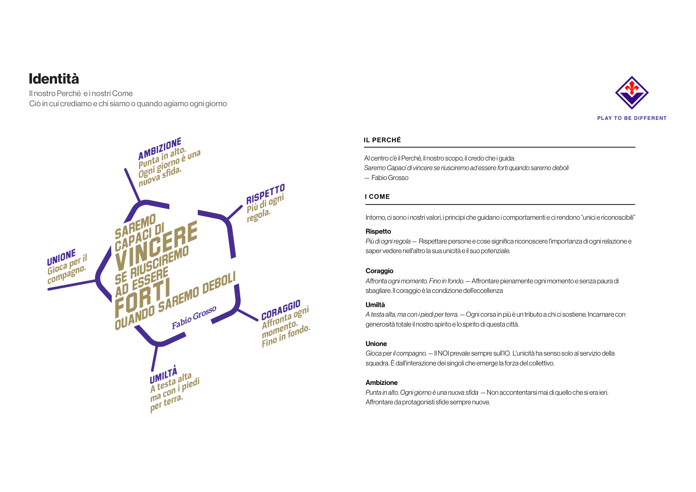

Come
I 5 Valori
I principi che guidano i comportamenti e ci rendono unici e riconoscibili.
I valori non sono uno slogan: sono il criterio con cui leggiamo ogni scelta, dentro e fuori dal campo. Cinque parole, un solo modo di stare nel gruppo.

Guida identitaria completa in aggiornamento — Rispetto e Coraggio nella nuova formulazione.